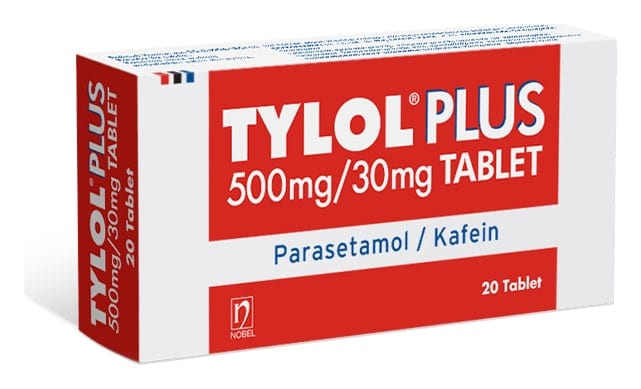

Tylol Plus 500 mg/30 mg Tablet, 20 Adet

Ne için kullanılır
KT · Bölüm 1TYLOL PLUS, her tabletinde 500 mg parasetamol ve 30 mg kafein içeren, ağrı kesici ve ateş düşürücü olarak etki gösteren bir ilaçtır.
TYLOL PLUS, 20 ve 30 tablet içeren blister ambalajlardadır. Beyaz renkli, bir yüzü ortadan tek çentikli, muntazam tabletlerdir.
TYLOL PLUS, hafif ve orta şiddetli ağrılar (baş ağrısı, migren, ağrılı adet görme, boğaz ağrısı, kas-iskelet ağrıları, kireçlenmeye bağlı ağrılar) aşıdan sonra oluşan ateş ve ağrı, diş ağrısı ve dişle ilgili işlemlerden sonra gelişen ağrılar, kulak ağrısı, grip ve soğuk algınlığından kaynaklı üst solunum yolları enfeksiyonlarında) ve ateşin giderilmesinde kullanılır.